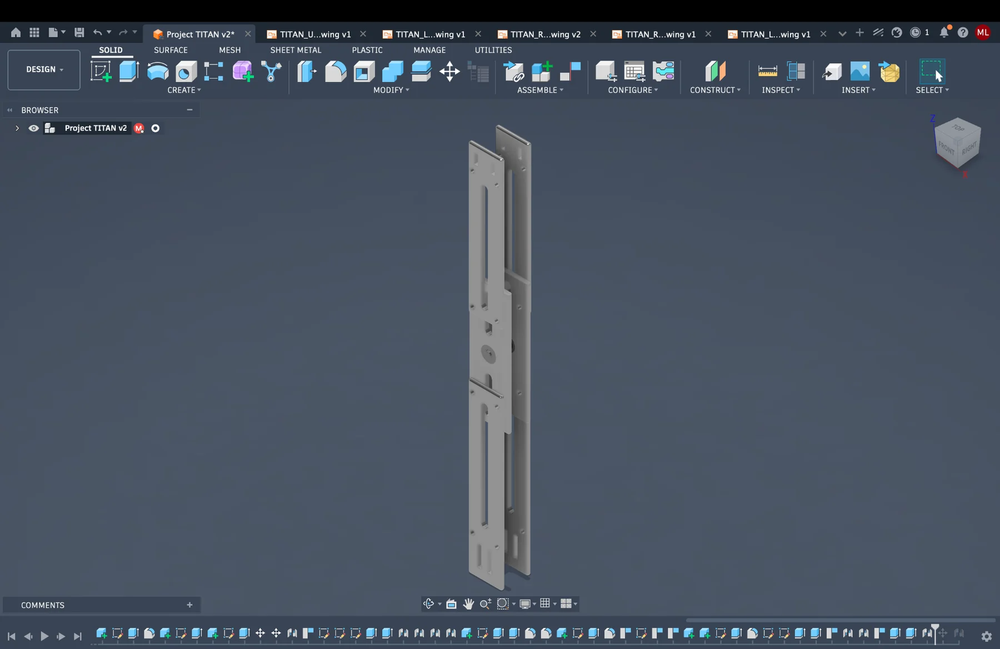

Objective
Create a lightweight, manufacturable, bearing-supported mechanical architecture and evaluate it under a defined static load case.
Engineering case study · Revision V1
Mechanical Design & Engineering Validation
An educational biomedical engineering project exploring a modular knee-support mechanism through requirements definition, parametric CAD, structural simulation, manufacturing documentation, and risk analysis.

01 · Project definition
Develop a modular structural assembly representative of a wearable knee-support mechanism while demonstrating a complete digital engineering workflow. The project is a portfolio case study—not a clinical device or validated product.
Create a lightweight, manufacturable, bearing-supported mechanical architecture and evaluate it under a defined static load case.
CAD, assembly, drawings, static FEA, material trade study, risk analysis, traceability, and prototype planning.
Human testing, clinical claims, fatigue testing, biocompatibility testing, production tooling, and regulatory submission.
02 · Design inputs and outputs
| Design input | Design output | Verification evidence | Status |
|---|---|---|---|
| Minimum target safety factor ≥ 2.0 | Static-stress model and load case | Fusion safety-factor result | Reported pass |
| Bearing-supported shaft | Two-bearing central shaft architecture | CAD assembly inspection | Verified digitally |
| Modular construction | Individually modeled components | Assembly browser and exploded view | Verified digitally |
| Machinable geometry | Milled plates/frames and turned shaft/spacers | Drawing and process-plan review | Planned review |
| Low structural displacement | Stiff plate-and-frame assembly | Fusion displacement result | Reported pass |
| Physical functionality | Future prototype | Fit, motion, and load testing | Not yet tested |
Statuses distinguish digital verification from future physical validation. See the full Requirements Traceability Matrix in the document library.
03 · CAD development
The design was created in Autodesk Fusion 360 using separate components, assembly constraints, bearing interfaces, and iterative interference checks.
Component breakdown
04 · Finite element analysis
Two 2,000 N bearing loads were applied to the inner cylindrical bearing surfaces. Results are specific to the modeled contacts, constraints, mesh, and material properties.
Maximum stress reported by the final Fusion static study. The contour identifies the modeled load-transfer regions and stress concentrations.
The reported stress and safety-factor pair imply an effective yield value of approximately 130.6 MPa. That does not match nominal 6061-T6 design intent. Before making a material-specific safety claim, the assigned Fusion materials and yield properties should be rechecked for every load-bearing component.
Separate bearing loads retained rather than combined into one unsupported point load.
Idealized, room-temperature, linear-elastic study without fatigue or physical testing.
Load distribution and simplified plate/shaft checks complement—but do not replace—the full assembly FEA.
05 · Engineering drawings
Select a sheet to view it full screen. The complete drawing package remains part of the Technical Data Package.
06 · Engineering decisions
Selected as the structural baseline because of its low density, machinability, corrosion resistance, availability, and educational prototype cost.
Side plates and upper/lower frames use a 6 mm thickness in the current model. Physical testing is still required before treating this as a production dimension.
Commercial bearings provide a defined rotational interface and separate custom structural geometry from the rolling elements.
Individual parts improve design clarity, replacement logic, drawing control, assembly planning, and future redesign.
A linear static study establishes a digital baseline before more advanced contact, fatigue, dynamic, or physical testing.
The portfolio distinguishes modeled results from verified physical performance and identifies open material and prototype questions.
07 · Manufacturing and risk planning
Consider sealed commercial bearings, contamination controls, and rotation testing.
Maintain traceability to load assumptions, audit materials, and validate through physical testing.
Control bearing-seat geometry, spacer dimensions, and final assembly alignment.
Define hardware, torque, locking method, and inspection in a future prototype release.
08 · Lessons learned
Defining interfaces and component roles early reduced arbitrary modeling and made later documentation more coherent.
Contacts, constraints, unconstrained bodies, load direction, and mesh quality were as important as solving the study.
The material-property discrepancy showed why simulation outputs should be audited instead of accepted automatically.
Creating part drawings forced clearer dimensions, materials, part numbers, quantities, and manufacturing assumptions.
Requirements, risks, decisions, and verification evidence became a connected engineering story rather than isolated files.
09 · Future roadmap
CAD, drawings, static FEA, engineering documents, portfolio, and open-issue identification.
CurrentProduce a fit-check prototype when fabrication resources are available; verify tolerances and motion.
PlannedMeasure load, deflection, alignment, repeatability, bearing friction, and compare results with simulation.
FutureExplore IMU or joint-angle sensing, data acquisition, and rehabilitation-focused feedback.
ConceptProject discussion
Review the controlled documentation or contact Michael to discuss the design, simulation setup, limitations, and next steps.